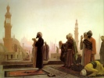

Sacred Texts Islam Index
Hypertext Quran Unicode Quran Pickthall Palmer Part II (SBE09) Yusuf Ali/Arabic Rodwell
Previous Next

The Holy Quran, tr. by Yusuf Ali, [1934], at sacred-texts.com
Sara LXXIX.
Nāzi’āt, or Those Who Tear Out.
In the name of God, Most Gracious,
Most Merciful
1. By the (angels)
Who tear out
(The souls of the wicked)
With violence;
2. By those who gently
Draw out (the souls
Of the blessed);
3. And by those who glide
Along (on errands of mercy),
4. Then press forward
As in a race,
5. Then arrange to do
(The Commands of their Lord),—
6. One Day everything that
Can be in commotion will
Be in violent commotion,
7. Followed by oft-repeated
(Commotions):
8. Hearts that Day
Will be in agitation;
9. Cast down will be
(Their owners’) eyes.
10. They say (now): "What!
Shall we indeed be
Returned to (our) former state?—
11. "What!—when we shall
Have become rotten bones?"
12. They say: "It would
In that case, be
A return with loss!"
13. But verily, it will
Be but a single
(Compelling) Cry,
14. When, behold, they
Will be in the (full)
Awakening (to Judgment).
15. Has the story
Of Moses reached thee?
16. Behold, thy Lord did call
To him in the sacred valley
Of Ṭuwā:—
17. "Go thou to Pharaoh,
For he has indeed
Transgressed all bounds:
18. "And say to him,
"Wouldst thou that thou
Shouldst he purified
(From sin)?—
19. "And that I guide thee
To thy Lord, so thou
Shouldst fear Him?"
20. Then did (Moses) show him
The Great Sign.
21. But (Pharaoh) rejected it
And disobeyed (guidance);
22. Further, he turned his back,
Striving hard (against God).
23. Then he collected (his men)
And made a proclamation,
24. Saying, "I am your Lord,
Most High".
25. But God did punish him,
(And made an) example
Of him,—in the Hereafter,
As in this life.
26. Verily in this is
An instructive warning
For whosoever feareth (God).
SECTION 2.
27. What! Are ye the more
Difficult to create
Or the heaven (above)?
(God) hath constructed it:
28. On high hath He raised
Its canopy, and He hath
Given it order and perfection.
29. Its night doth He
Endow with darkness,
And its splendour doth He
Bring out (with light).
30. And the earth, moreover,
Hath He extended
(To a wide expanse);
31. He draweth out
Therefrom its moisture
And its pasture;
32. And the mountains
Hath He firmly fixed;
33. For use and convenience
To you and your cattle.
34. Therefore, when there comes
The great, overwhelming (Event),—
35. The Day when Man
Shall remember (all)
That he strove for,
36. And Hell-Fire shall be
Placed in full view
For (all) to see,—
37. Then, for such as had
Transgressed all bounds,
38. And had preferred
The life of this world,
39. The Abode will be
Hell-Fire;
40. And for such as had
Entertained the fear
Of standing before
Their Lord's (tribunal)
And had restrained
(Their) soul from lower Desires,
41. Their Abode will be
The Garden.
42. They ask thee
About the Hour,—"When
Will be its appointed time?"
43. Wherein art thou (concerned)
With the declaration thereof?
44. With thy Lord is
The Limit fixed therefor.
45. Thou art but a Warner
For such as fear it.
46. The Day they see it,
(It will be) as if they
Had tarried but a single
Evening, or (at most till)
The following morn!